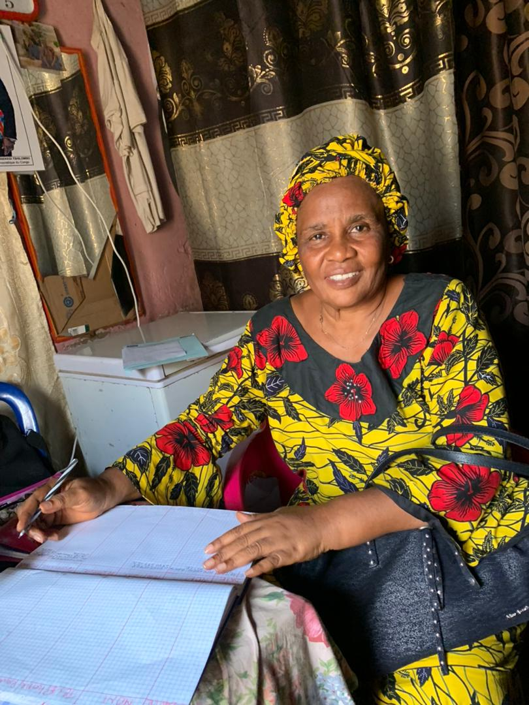
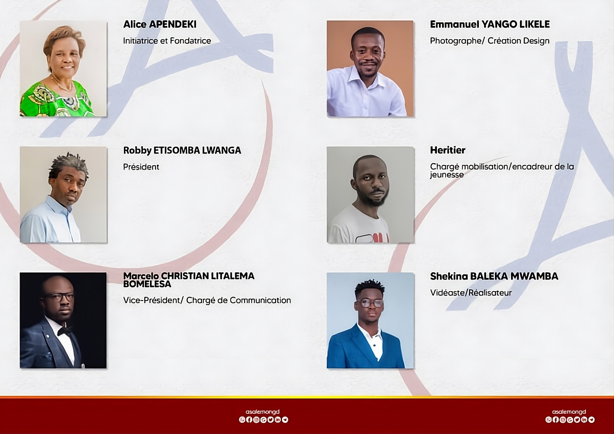
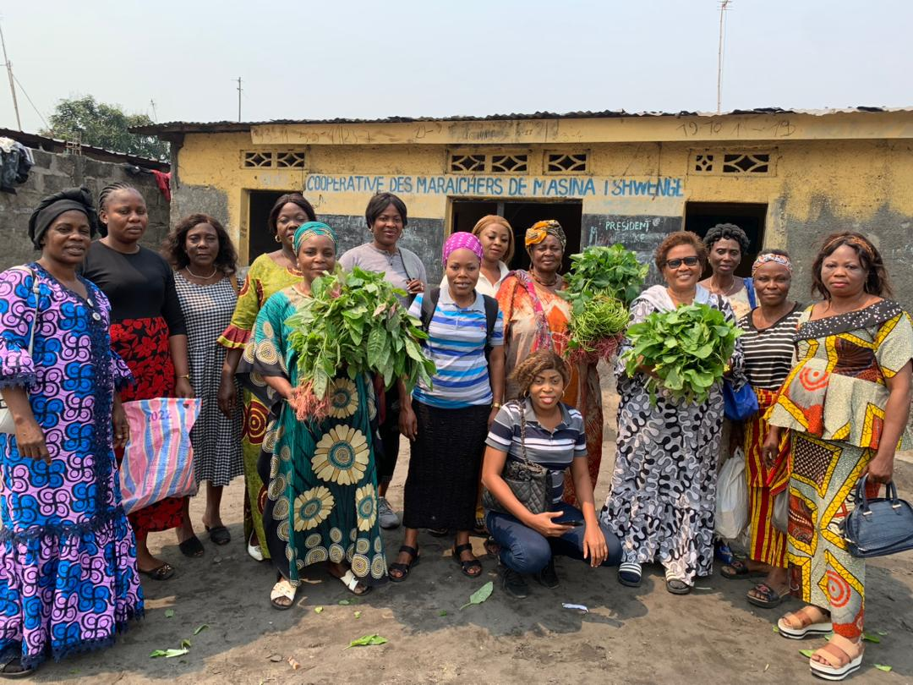

Donate
Your support funds counseling, school supplies, and livelihood training for families in need.
About A-SALEM
A-SALEM began as a personal promise from founder Alice Apendeke to heal trauma, protect the vulnerable, and build peaceful communities across eastern Congo.

A-SALEM was founded in 2002 by Alice Apendeke, a Congolese woman who turned personal tragedy into a mission of hope. At just 25 years old, Alice became a widow after her husband, a military pilot, died in a tragic plane crash. Left to raise four young children amid political instability, she faced harassment, social pressure, and severe economic hardship. At times, she and her children had no food, no safe place to sleep, and no support.
Instead of giving up, Alice returned to school, completed her education, and found work in a hospital where she began helping patients, hungry children, and neighbors in need. Using a small portion of her paycheck, she bought food, medicine, and supplies to share. From these humble beginnings, A-SALEM was born—its name meaning “towards peace,” reflecting Alice’s vision to create peace through care, compassion, and community service.

Donate

Your support funds counseling, school supplies, and livelihood training for families in need.
Help with outreach, education planning, and community events that build stronger local networks.
Work with A-SALEM to expand programs and bring sustainable services to more communities.
Our Work
A-SALEM serves communities in Kinganga and Bita, responding to war not just with aid—but with hope, care, and practical tools to rebuild lives.
Most recently, A-SALEM began a water initiative to build clean water wells, helping prevent disease and fuel local economies. With the first well built, the orphanage moved to a safer location and began generating income by selling water to fund food, clothing, and entrepreneurship education for youth. The need remains immense, and A-SALEM continues to scale this work.